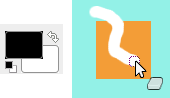

The Eraser is used to remove areas of color from the current layer or from a selection of this layer. If the Eraser is used on something that does not support transparency (a selection mask channel, a layer mask, or the Background layer if it lacks an alpha channel), then erasing will show the background color, as displayed in the Color Area of the Toolbox (in case of a mask, the selection will be modified). Otherwise, erasing will produce either partial or full transparency, depending on the settings for the tool options. You can learn more on how to add an alpha channel to a layer in Section 7.36, “Add Alpha Channel”.
Figure 14.63. Eraser and Alpha channel

The Background Color is White. The image has no Alpha channel. The Eraser (Opacity 100%) shows the white background color.

The image has an Alpha channel. The Eraser shows transparency using a checkerboard pattern.
If you need to erase some group of pixels completely, leaving no trace behind of their previous contents, you should check the "Hard edge" box in the Tool Options. Otherwise, sub-pixel brush placement will cause partial erasure at the edges of the brush-stroke, even if you use a hard-edged brush.
![[Tip]](images/tip.png)
|
Tip |
|---|---|
|
If you use GIMP with a tablet, you may find it convenient to treat the reverse end of the stylus as an eraser. To make this work, all you need to do is click the reverse end on the Eraser tool in the Toolbox. Because each end of the stylus is treated as a separate input device, and each input device has its own separate tool assignment, the reverse end will then continue to function as an Eraser as long as you don't select a different tool with it. |
There are different possibilities to activate the tool:
-
From the main menu: → → .
-
By clicking the tool icon in the Toolbox.
-
By pressing the Shift+E keyboard shortcut.
See the Section 3.1, “Common Features” for a description of key modifiers that have the same effect on all paint tools.
- Ctrl
-
For the Eraser, holding down the Ctrl key puts it into “color picker” mode, so that it selects the color of any pixel it is clicked on. Unlike other brush tools, however, the Eraser sets the background color rather than the foreground color. This is more useful, because on drawables that don't support transparency, erasing replaces the erased areas with the current background color.
- Alt
-
For the Eraser, holding down the Alt key switches it into “anti-erase” mode, as described below in the Tool Options section. Note that on some systems, the Alt key is trapped by the Window Manager. If this happens to you, you may be able to use Alt+Shift instead.
Normally, tool options are displayed in a window attached under the Toolbox as soon as you activate a tool. If they are not, you can access them from the main menu through → → which opens the option window of the selected tool. The available tool options can also be accessed by double clicking the corresponding tool icon in the Toolbox.
- Mode, Brush, Size, Aspect Ratio, Angle, Spacing, Hardness, Force, Dynamics, Dynamics Options, Apply Jitter, Smooth Stroke, Lock brush size to view, Incremental
- See the Common Paint Tool Options for a description of tool options that apply to many or all paint tools.
- Opacity
-
The Opacity slider, in spite of its name, in this tool determines the “strength” of the tool. Thus, when you erase on a layer with an alpha channel, the higher the opacity you use, the more transparency you get!
- Hard Edge
-
This option avoids partial erasure at the edges of the brush-stroke. See above.
- Anti Erase
-
The Anti Erase option of the Erase tool can un-erase areas of an image, even if they are completely transparent. This feature only works when used on layers with an alpha channel. In addition to the check-button in the Tool Options, it can also be activated on-the-fly by holding down the Alt key (or, if the Alt key is trapped by the Window Manager, by holding down Alt+Shift).
![[Note]](images/note.png)
Note To understand how anti-erasing is possible, you should realize that erasing (or cutting, for that matter) only affects the alpha channel, not the RGB channels that contain the image data. Even if the result is completely transparent, the RGB data is still there, you simply can't see it. Anti-erasing increases the alpha value so that you can see the RGB data once again.